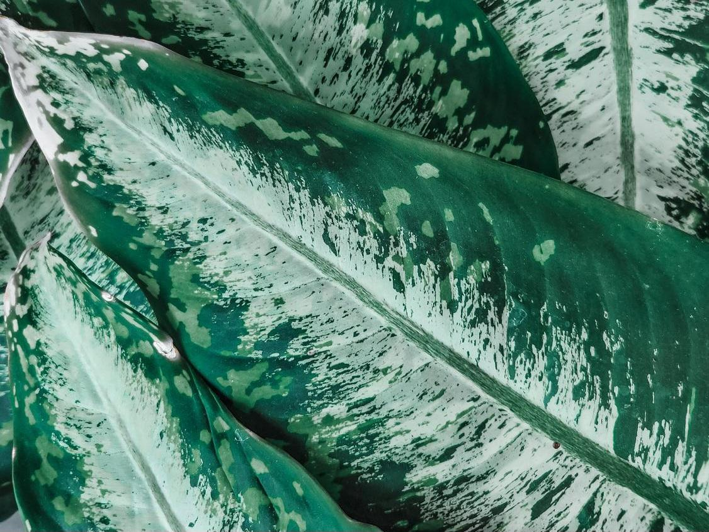
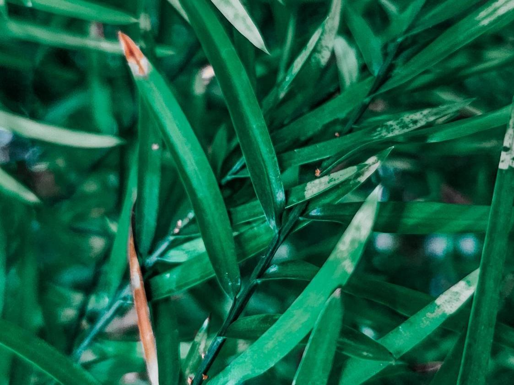
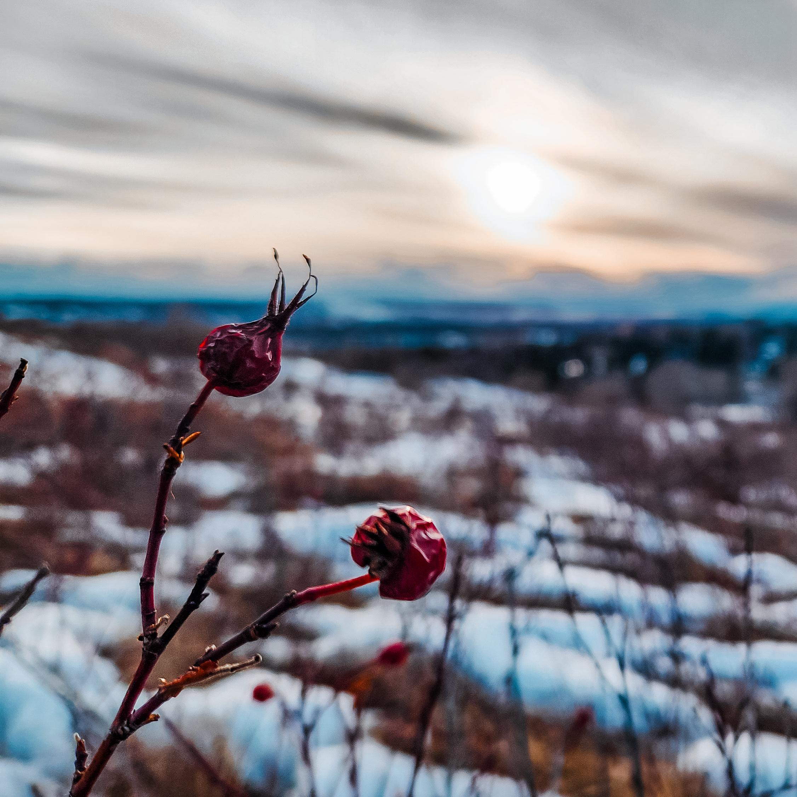

My Photography
Welcome to my photography collection! I have a deep passion for capturing the beauty of nature, the charm of pets, the spontaneity of random moments, and the joy of spending time with friends. However, my heart belongs to nature photography. Through my lens, I strive to immortalize the fleeting moments of life and share the wonder of the world with others.

The sunset of Dalhousie
A mesmerizing view of the sunset at Dalhousie.

2nd plants of Devonian Gardens
Beautiful foliage at the Devonian Gardens.

3rd plants of Devonian Gardens
More greenery to admire at the Devonian Gardens.

Sunset again
Another breathtaking sunset captured in all its glory.

Riding home in the sunset light in the bus
Enjoying the golden hour on the way home.

Dog Toha
Meet Toha, the adorable dog of one of my best friends.

Rowan in autumn
Stunning rowan tree adorned in vibrant autumn colors.